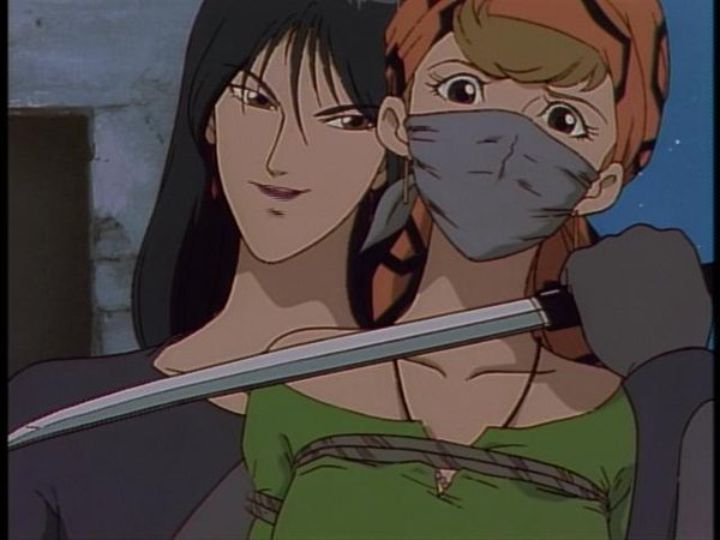

Out of morbid curiousity, I seem to keep coming back to watching more films and television specials relating to "Lupin the Third." In the case of the 1996 television special "The Secret of the Twilight Gemini," I had heard about it's poor reputation regarding one of its characters, a whip-wiedling cross-gender assassin. The problematic character probably isn't worth sitting through one of the weaker Lupin adentures. This time, Lupin sees a dying old friend, and from him receives the Twilight Diamond, and is told that it's a key to a much grander treasure, hidden somewhere in Morocco. It turns out there are two diamon pieces, and Lupin and Jigen have to find the owner of the second half, uncovering the secret history of the local Geltic tribe. But there's another party of cult assassins that stand in their way, and of course, Inspector Zenigata is determined to catch the thieves again. Fujiko shows up by chance to figure out what Lupin is up to, and Goemon appears briefly. One of the big bad guys, a lead henchman to the bad boss, is Sadachiyo. They're portrayed as a large figure with long hair and lipstick and a whip, and could be either a man or a woman (the English dub is a bit more likely to be a woman, the Japanese dub more likely a cross-dressing man). Right away, Lupin cracks jokes about them being a "fruit," and in the Japanese dub in particular, characters can't help but reference in a disparaging tone that he's a gay man. Their appearance isn't much of an issue (Disney has used feminine and flamboyant villains for years, typically with fun results), but having the heroes mention they're sexuality at all, let alone this often, is poor form. Otherwise, there's not much to say about the plot. The setting isn't used effectively, beyond the reference of multiple native tribes warring over each other. There's a lot of Lupin wandering around, and not much action or conflict until the final quarter. It's pretty dull, and certainly doesn't justify the long 90-minute runtime. The most exciting part might be the few instances of sexy fanservice, but that's not worth sitting through the movie for.  The most disappointing thing about the movie is the poor production values. A classic example of weak 90's anime, the animation is limited and choppy, and lacks much expression, despite Lupin's antics. The character designs are typical for 90's anime too, in that they have large chins and small mouths, not a style I was ever a fan of. And there's something off about how the action is directed... it seems so lackluster, when it should be more exciting. That poor direction is more noticable from the poor acting: the old English dub, despite featuring actors associated with modern Lupin work, is also one of the worst English dubs I've heard (even completly missing lip-flaps in a couple casses), a rare case where I chose to watch the Japanese dub instead, which is only slightly better. For whatever reason, the movie's animation and acting seems to get better as the movie goes on. The extensive liner notes in Discotek's Bluray bonus features mention that this was one of Funimation's first dubs for the Lupin franchise, back when they didn't have the dubbing experience they'd become famous for by the mid-2000's. Curiously, there are two edits of the movie for English audiences, an uncut and a TV-edit version. The TV version edits some of the romance and nudity scenes (Fujiko's nipples are shown a couple times, as well as another female character), and some moments of course language (even in the uncut version, I thought the language was pretty tame). Both are available on the Discotek Bluray release in North America, but neither are particularly exciting.Things come together a bit better in the final act, but "Lupin the Third - The Secret of the Twilight Gemini" isn't worth sitting through due to poor animation, acting, pacing, and direction. There's a sminge of opportunity from the setting and its characters though, so it might be a good candidate for a remake one day.
- "Ani" More reviews can be found at : https://2danicritic.github.io/ Previous review: review_Lupin_the_Third_-_The_Mystery_of_Mamo Next review: review_Lupin_the_Third_-_The_Woman_Called_Fujiko_Mine